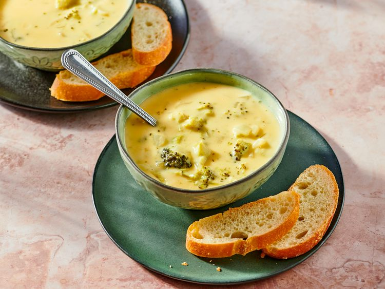

Broccoli cheese Soup

Description
This is a recipe for extremely flavourful broccoli cheese soup.
This is a great meal if you have some time for a well prepeared
afternoon lunch.
Ingredients
- Half a cup of butter
- 1 chopped onion
- A 450 gram bag of frozen broccoli
- 4 400 gram cans of chicken broth
- 450 grams cubed loaf processed cheese food
- 2 cups of milk
- 1 tablespoon garlic powder
- 2 thirds of a cup cornstarch
- 1 cup of water
Steps
- Gather all the ingredients.
- Melt butter in a stockpot over medium heat. Add onion and cook, stirring occasionally, until softened. Stir in broccoli.
- Add broth and simmer until broccoli is tender, 10 to 15 minutes.
- Reduce heat; add cheese cubes and stir until melted. Stir in milk and garlic powder.
- Stir cornstarch and water together in a small bowl until smooth. Stir into soup; cook, stirring frequently, until thick.
Home